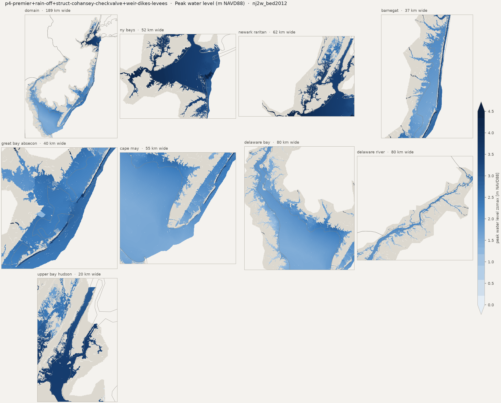
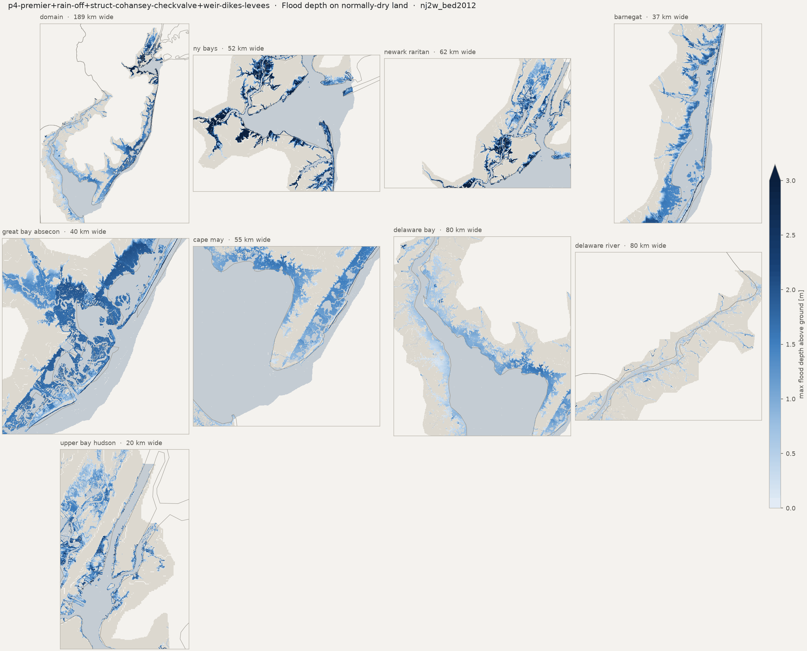
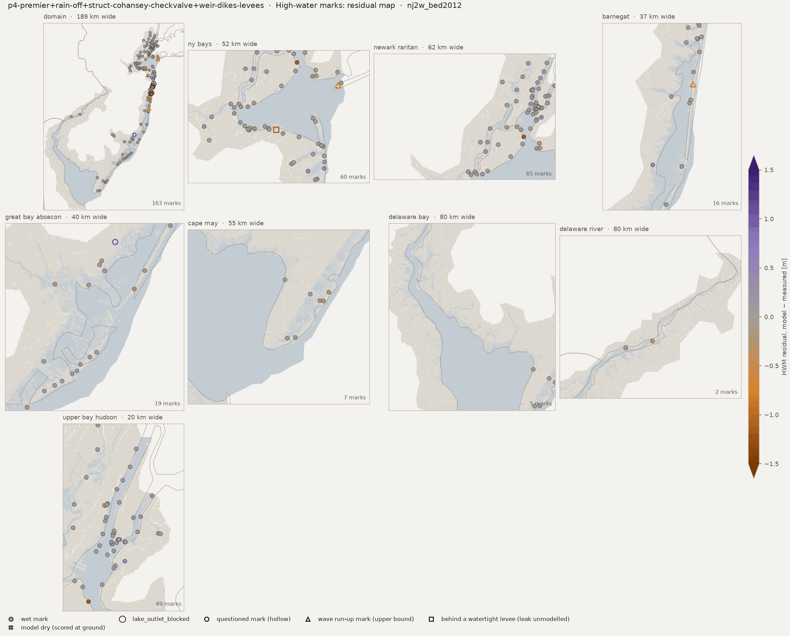
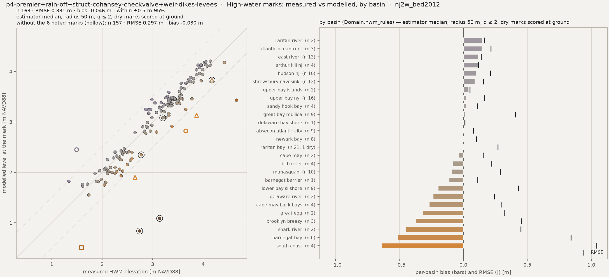
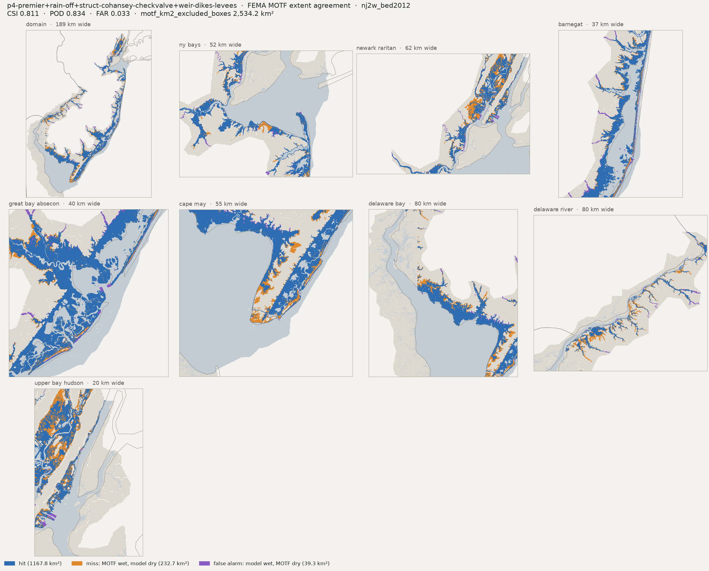
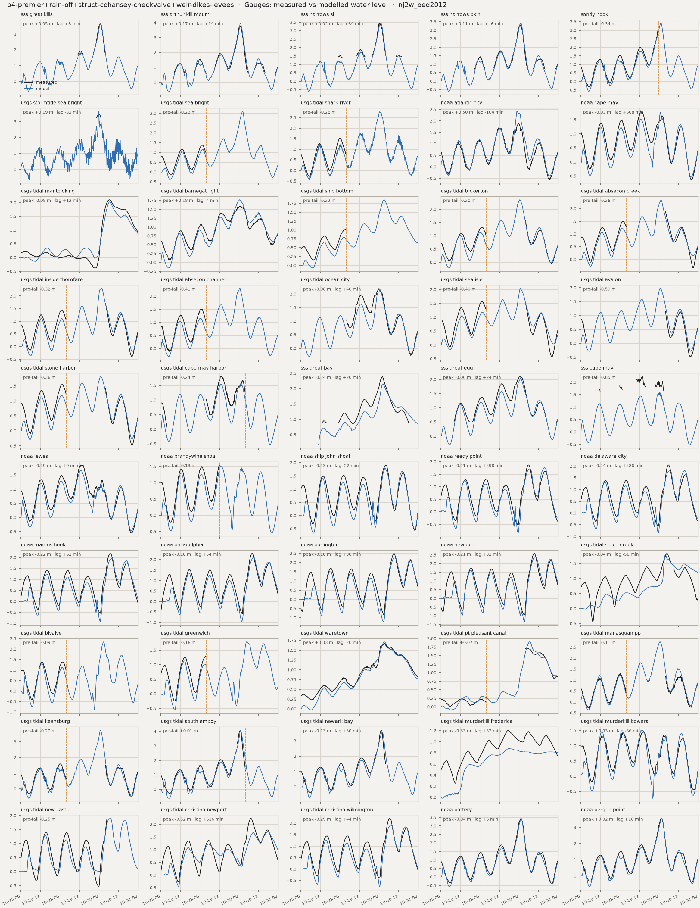
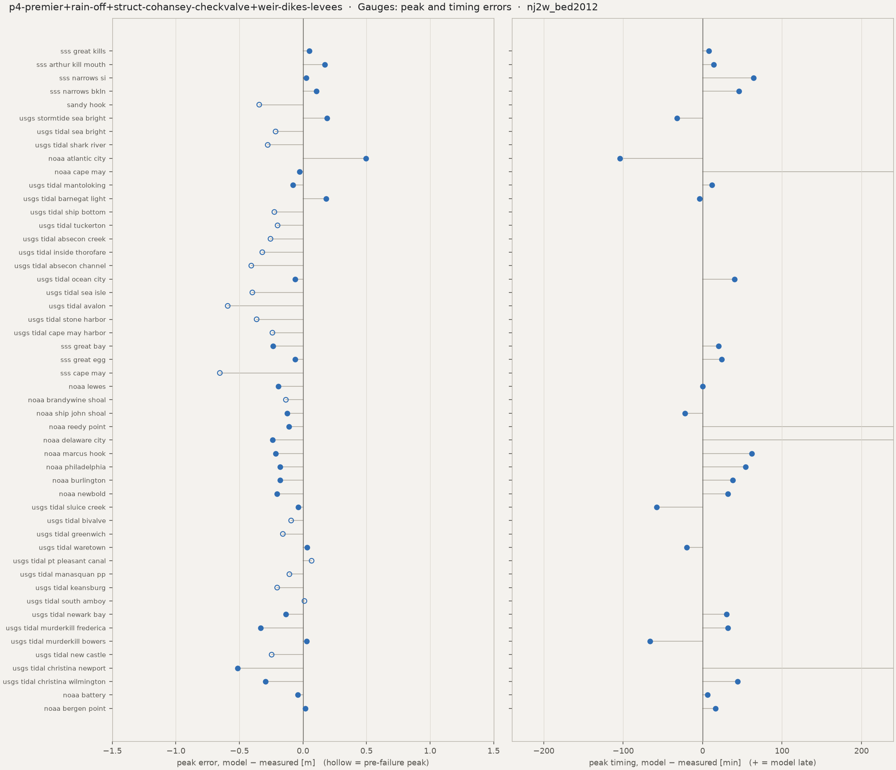
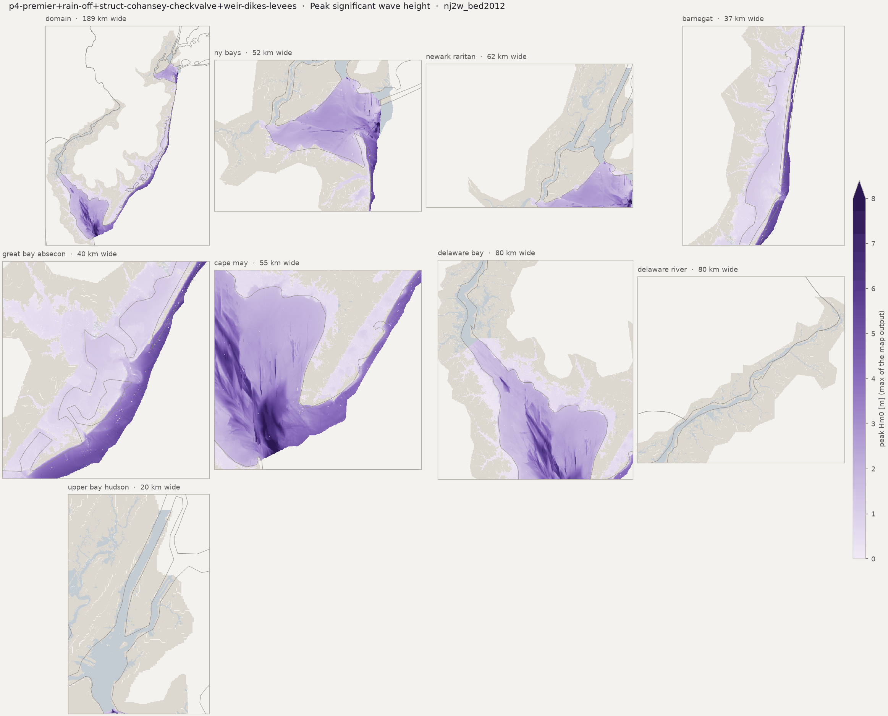

MOTF reference: 2.0.0 with rain off. Run card, flags and the standard figure set. HWM numbers: estimator median, radius 50 m. Compare with p4-premier
Preliminary research diagnostics — not peer-reviewed results.
HWM: estimator median, radius 50 m, q ≤ 2, dry marks scored at ground (the _scored keys). CSI / POD / FAR on sheet-valid land; km² excl. = motf_km2_excluded_boxes.








| floodmap | native 3.125 m |
| peak_zb_sss_great_kills_m | -1.5018250942230225 |
| peak_obs_sss_great_kills_m | 3.650640566666667 |
| peak_obs_time_sss_great_kills | 2012-10-30T00:42 |
| peak_mod_full_sss_great_kills_m | 3.700242519378662 |
| peak_mod_full_time_sss_great_kills | 2012-10-30T00:50 |
| obs_offset_sss_great_kills_m | -0.34 |
| peak_err_sss_great_kills_m | 0.049601952711995 |
| peak_lag_sss_great_kills_min | 8.0 |
| peak_zb_sss_arthur_kill_mouth_m | -1.062054991722107 |
| peak_obs_sss_arthur_kill_mouth_m | 3.8134290000000006 |
| peak_obs_time_sss_arthur_kill_mouth | 2012-10-30T00:36 |
| peak_mod_full_sss_arthur_kill_mouth_m | 3.98661994934082 |
| peak_mod_full_time_sss_arthur_kill_mouth | 2012-10-30T00:50 |
| peak_err_sss_arthur_kill_mouth_m | 0.1731909493408197 |
| peak_lag_sss_arthur_kill_mouth_min | 14.0 |
| peak_zb_sss_narrows_si_m | -2.052652597427368 |
| peak_obs_sss_narrows_si_m | 3.4239073 |
| peak_obs_time_sss_narrows_si | 2012-10-30T00:06 |
| peak_mod_full_sss_narrows_si_m | 3.448410749435425 |
| peak_mod_full_time_sss_narrows_si | 2012-10-30T01:10 |
| peak_err_sss_narrows_si_m | 0.0245034494354245 |
| peak_lag_sss_narrows_si_min | 64.0 |
| peak_zb_sss_narrows_bkln_m | -3.9864342212677 |
| peak_obs_sss_narrows_bkln_m | 3.315567833333333 |
| peak_obs_time_sss_narrows_bkln | 2012-10-30T00:24 |
| peak_mod_full_sss_narrows_bkln_m | 3.421266555786133 |
| peak_mod_full_time_sss_narrows_bkln | 2012-10-30T01:10 |
| peak_err_sss_narrows_bkln_m | 0.1056987224527996 |
| peak_lag_sss_narrows_bkln_min | 46.0 |
| peak_zb_sandy_hook_m | -4.570703029632568 |
| peak_obs_sandy_hook_m | 3.175 |
| peak_obs_time_sandy_hook | 2012-10-29T23:36 |
| peak_mod_full_sandy_hook_m | 3.418119192123413 |
| peak_mod_full_time_sandy_hook | 2012-10-30T01:10 |
| peak_mod_prefail_sandy_hook_m | 2.8309991359710693 |
| peak_err_prefail_sandy_hook_m | -0.3440008640289305 |
| peak_record_ends_sandy_hook | 2012-10-29 23:36 |
| peak_zb_usgs_stormtide_sea_bright_m | -2.3048408031463623 |
| peak_obs_usgs_stormtide_sea_bright_m | 3.4651196864959743 |
| peak_obs_time_usgs_stormtide_sea_bright | 2012-10-30T00:12 |
| peak_mod_full_usgs_stormtide_sea_bright_m | 3.654670000076294 |
| peak_mod_full_time_usgs_stormtide_sea_bright | 2012-10-29T23:40 |
| peak_err_usgs_stormtide_sea_bright_m | 0.1895503135803196 |
| peak_lag_usgs_stormtide_sea_bright_min | -32.0 |
| peak_zb_usgs_tidal_sea_bright_m | -4.364447116851807 |
| peak_obs_usgs_tidal_sea_bright_m | 1.383792 |
| peak_obs_time_usgs_tidal_sea_bright | 2012-10-29T01:12 |
| peak_mod_full_usgs_tidal_sea_bright_m | 3.0905728340148926 |
| peak_mod_full_time_usgs_tidal_sea_bright | 2012-10-30T02:20 |
| peak_pub_usgs_tidal_sea_bright_m | 2.914 |
| peak_pub_time_usgs_tidal_sea_bright | 2012-10-30 00:54 |
| peak_err_pub_usgs_tidal_sea_bright_m | 0.1765728340148924 |
| peak_lag_pub_usgs_tidal_sea_bright_min | 86.0 |
| peak_mod_prefail_usgs_tidal_sea_bright_m | 1.168612003326416 |
| peak_err_prefail_usgs_tidal_sea_bright_m | -0.2151799966735841 |
| peak_record_ends_usgs_tidal_sea_bright | 2012-10-29 04:00 |
| peak_zb_usgs_tidal_shark_river_m | -4.12901782989502 |
| peak_obs_usgs_tidal_shark_river_m | 1.527048 |
| peak_obs_time_usgs_tidal_shark_river | 2012-10-29T00:00 |
| peak_mod_full_usgs_tidal_shark_river_m | 2.790179252624512 |
| peak_mod_full_time_usgs_tidal_shark_river | 2012-10-30T00:30 |
| peak_pub_usgs_tidal_shark_river_m | 3.335 |
| peak_pub_time_usgs_tidal_shark_river | 2012-10-29 23:18 |
| peak_err_pub_usgs_tidal_shark_river_m | -0.5448207473754882 |
| peak_lag_pub_usgs_tidal_shark_river_min | 72.0 |
| peak_mod_prefail_usgs_tidal_shark_river_m | 1.252914547920227 |
| peak_err_prefail_usgs_tidal_shark_river_m | -0.2771814520797728 |
| peak_record_ends_usgs_tidal_shark_river | 2012-10-29 04:00 |
| peak_zb_noaa_atlantic_city_m | -7.123184680938721 |
| peak_obs_noaa_atlantic_city_m | 1.915 |
| peak_obs_time_noaa_atlantic_city | 2012-10-30T00:24 |
| peak_mod_full_noaa_atlantic_city_m | 2.4116578102111816 |
| peak_mod_full_time_noaa_atlantic_city | 2012-10-29T22:40 |
| peak_err_noaa_atlantic_city_m | 0.4966578102111816 |
| peak_lag_noaa_atlantic_city_min | -104.0 |
| peak_zb_noaa_cape_may_m | -6.598322868347168 |
| peak_obs_noaa_cape_may_m | 1.798 |
| peak_obs_time_noaa_cape_may | 2012-10-29T13:42 |
| peak_mod_full_noaa_cape_may_m | 1.7717440128326416 |
| peak_mod_full_time_noaa_cape_may | 2012-10-30T00:50 |
| peak_err_noaa_cape_may_m | -0.0262559871673584 |
| peak_lag_noaa_cape_may_min | 668.0 |
| peak_zb_usgs_tidal_mantoloking_m | -2.4557981491088867 |
| peak_obs_usgs_tidal_mantoloking_m | 2.1061680000000003 |
| peak_obs_time_usgs_tidal_mantoloking | 2012-10-30T06:18 |
| peak_mod_full_usgs_tidal_mantoloking_m | 2.02815580368042 |
| peak_mod_full_time_usgs_tidal_mantoloking | 2012-10-30T06:30 |
| peak_err_usgs_tidal_mantoloking_m | -0.0780121963195803 |
| peak_lag_usgs_tidal_mantoloking_min | 12.0 |
| peak_zb_usgs_tidal_barnegat_light_m | -7.473830223083496 |
| peak_obs_usgs_tidal_barnegat_light_m | 1.588008 |
| peak_obs_time_usgs_tidal_barnegat_light | 2012-10-30T00:24 |
| peak_mod_full_usgs_tidal_barnegat_light_m | 1.7701797485351562 |
| peak_mod_full_time_usgs_tidal_barnegat_light | 2012-10-30T00:20 |
| peak_err_usgs_tidal_barnegat_light_m | 0.1821717485351561 |
| peak_lag_usgs_tidal_barnegat_light_min | -4.0 |
| peak_zb_usgs_tidal_ship_bottom_m | -4.847646713256836 |
| peak_obs_usgs_tidal_ship_bottom_m | 1.024128 |
| peak_obs_time_usgs_tidal_ship_bottom | 2012-10-29T02:54 |
| peak_mod_full_usgs_tidal_ship_bottom_m | 1.850114107131958 |
| peak_mod_full_time_usgs_tidal_ship_bottom | 2012-10-30T03:10 |
| peak_pub_usgs_tidal_ship_bottom_m | 1.966 |
| peak_pub_time_usgs_tidal_ship_bottom | 2012-10-30 03:00 |
| peak_err_pub_usgs_tidal_ship_bottom_m | -0.1158858928680419 |
| peak_lag_pub_usgs_tidal_ship_bottom_min | 10.0 |
| peak_mod_prefail_usgs_tidal_ship_bottom_m | 0.7992364764213562 |
| peak_err_prefail_usgs_tidal_ship_bottom_m | -0.2248915235786437 |
| peak_record_ends_usgs_tidal_ship_bottom | 2012-10-29 03:54 |
| peak_zb_usgs_tidal_tuckerton_m | -2.1096279621124268 |
| peak_obs_usgs_tidal_tuckerton_m | 1.591056 |
| peak_obs_time_usgs_tidal_tuckerton | 2012-10-30T04:00 |
| peak_mod_full_usgs_tidal_tuckerton_m | 2.359764337539673 |
| peak_mod_full_time_usgs_tidal_tuckerton | 2012-10-30T00:30 |
| peak_pub_usgs_tidal_tuckerton_m | 2.53 |
| peak_pub_time_usgs_tidal_tuckerton | 2012-10-29 23:48 |
| peak_err_pub_usgs_tidal_tuckerton_m | -0.1702356624603269 |
| peak_lag_pub_usgs_tidal_tuckerton_min | 42.0 |
| peak_mod_prefail_usgs_tidal_tuckerton_m | 1.126225471496582 |
| peak_err_prefail_usgs_tidal_tuckerton_m | -0.1996545285034179 |
| peak_record_ends_usgs_tidal_tuckerton | 2012-10-29 03:54 |
| peak_zb_usgs_tidal_absecon_creek_m | -1.0937918424606323 |
| peak_obs_usgs_tidal_absecon_creek_m | 1.87452 |
| peak_obs_time_usgs_tidal_absecon_creek | 2012-10-30T04:00 |
| peak_mod_full_usgs_tidal_absecon_creek_m | 2.347451686859131 |
| peak_mod_full_time_usgs_tidal_absecon_creek | 2012-10-30T01:10 |
| peak_pub_usgs_tidal_absecon_creek_m | 2.295 |
| peak_pub_time_usgs_tidal_absecon_creek | 2012-10-30 01:06 |
| peak_err_pub_usgs_tidal_absecon_creek_m | 0.0524516868591309 |
| peak_lag_pub_usgs_tidal_absecon_creek_min | 4.0 |
| peak_mod_prefail_usgs_tidal_absecon_creek_m | 1.238162636756897 |
| peak_err_prefail_usgs_tidal_absecon_creek_m | -0.2553573632431032 |
| peak_record_ends_usgs_tidal_absecon_creek | 2012-10-29 03:54 |
| peak_zb_usgs_tidal_inside_thorofare_m | -4.974030494689941 |
| peak_obs_usgs_tidal_inside_thorofare_m | 1.712976 |
| peak_obs_time_usgs_tidal_inside_thorofare | 2012-10-30T04:00 |
| peak_mod_full_usgs_tidal_inside_thorofare_m | 2.2968521118164062 |
| peak_mod_full_time_usgs_tidal_inside_thorofare | 2012-10-30T01:40 |
| peak_pub_usgs_tidal_inside_thorofare_m | 2.323 |
| peak_pub_time_usgs_tidal_inside_thorofare | 2012-10-30 01:42 |
| peak_err_pub_usgs_tidal_inside_thorofare_m | -0.0261478881835937 |
| peak_lag_pub_usgs_tidal_inside_thorofare_min | -2.0 |
| peak_mod_prefail_usgs_tidal_inside_thorofare_m | 1.115696907043457 |
| peak_err_prefail_usgs_tidal_inside_thorofare_m | -0.3199110929565429 |
| peak_record_ends_usgs_tidal_inside_thorofare | 2012-10-29 03:54 |
| peak_zb_usgs_tidal_absecon_channel_m | -3.296544551849365 |
| peak_obs_usgs_tidal_absecon_channel_m | 1.5575280000000002 |
| peak_obs_time_usgs_tidal_absecon_channel | 2012-10-29T01:06 |
| peak_mod_full_usgs_tidal_absecon_channel_m | 2.299160480499268 |
| peak_mod_full_time_usgs_tidal_absecon_channel | 2012-10-30T00:20 |
| peak_pub_usgs_tidal_absecon_channel_m | 2.38 |
| peak_pub_time_usgs_tidal_absecon_channel | 2012-10-30 00:54 |
| peak_err_pub_usgs_tidal_absecon_channel_m | -0.0808395195007323 |
| peak_lag_pub_usgs_tidal_absecon_channel_min | -34.0 |
| peak_mod_prefail_usgs_tidal_absecon_channel_m | 1.1510262489318848 |
| peak_err_prefail_usgs_tidal_absecon_channel_m | -0.4065017510681155 |
| peak_record_ends_usgs_tidal_absecon_channel | 2012-10-29 03:54 |
| peak_zb_usgs_tidal_ocean_city_m | -7.289493083953857 |
| peak_obs_usgs_tidal_ocean_city_m | 2.2098 |
| peak_obs_time_usgs_tidal_ocean_city | 2012-10-30T00:00 |
| peak_mod_full_usgs_tidal_ocean_city_m | 2.1495187282562256 |
| peak_mod_full_time_usgs_tidal_ocean_city | 2012-10-30T00:40 |
| peak_err_usgs_tidal_ocean_city_m | -0.0602812717437744 |
| peak_lag_usgs_tidal_ocean_city_min | 40.0 |
| peak_zb_usgs_tidal_sea_isle_m | -1.7741228342056274 |
| peak_obs_usgs_tidal_sea_isle_m | 1.575816 |
| peak_obs_time_usgs_tidal_sea_isle | 2012-10-29T01:18 |
| peak_mod_full_usgs_tidal_sea_isle_m | 2.039884567260742 |
| peak_mod_full_time_usgs_tidal_sea_isle | 2012-10-30T00:50 |
| peak_pub_usgs_tidal_sea_isle_m | 2.304 |
| peak_pub_time_usgs_tidal_sea_isle | 2012-10-30 00:18 |
| peak_err_pub_usgs_tidal_sea_isle_m | -0.2641154327392576 |
| peak_lag_pub_usgs_tidal_sea_isle_min | 32.0 |
| peak_mod_prefail_usgs_tidal_sea_isle_m | 1.1776814460754397 |
| peak_err_prefail_usgs_tidal_sea_isle_m | -0.3981345539245606 |
| peak_record_ends_usgs_tidal_sea_isle | 2012-10-29 03:54 |
| peak_zb_usgs_tidal_avalon_m | -8.10555648803711 |
| peak_obs_usgs_tidal_avalon_m | 1.139952 |
| peak_obs_time_usgs_tidal_avalon | 2012-10-30T04:00 |
| peak_mod_full_usgs_tidal_avalon_m | 1.9740630388259888 |
| peak_mod_full_time_usgs_tidal_avalon | 2012-10-30T00:40 |
| peak_pub_usgs_tidal_avalon_m | 2.179 |
| peak_pub_time_usgs_tidal_avalon | 2012-10-29 23:24 |
| peak_err_pub_usgs_tidal_avalon_m | -0.204936961174011 |
| peak_lag_pub_usgs_tidal_avalon_min | 76.0 |
| peak_mod_prefail_usgs_tidal_avalon_m | 0.3102847933769226 |
| peak_err_prefail_usgs_tidal_avalon_m | -0.5919232066230774 |
| peak_record_ends_usgs_tidal_avalon | 2012-10-28 03:54 |
| peak_zb_usgs_tidal_stone_harbor_m | -8.05798625946045 |
| peak_obs_usgs_tidal_stone_harbor_m | 1.551432 |
| peak_obs_time_usgs_tidal_stone_harbor | 2012-10-29T01:12 |
| peak_mod_full_usgs_tidal_stone_harbor_m | 1.8113642930984497 |
| peak_mod_full_time_usgs_tidal_stone_harbor | 2012-10-30T01:00 |
| peak_pub_usgs_tidal_stone_harbor_m | 2.051 |
| peak_pub_time_usgs_tidal_stone_harbor | 2012-10-30 01:36 |
| peak_err_pub_usgs_tidal_stone_harbor_m | -0.2396357069015504 |
| peak_lag_pub_usgs_tidal_stone_harbor_min | -36.0 |
| peak_mod_prefail_usgs_tidal_stone_harbor_m | 1.1869491338729858 |
| peak_err_prefail_usgs_tidal_stone_harbor_m | -0.3644828661270143 |
| peak_record_ends_usgs_tidal_stone_harbor | 2012-10-29 03:54 |
| peak_zb_usgs_tidal_cape_may_harbor_m | -1.5647752285003662 |
| peak_obs_usgs_tidal_cape_may_harbor_m | 1.79832 |
| peak_obs_time_usgs_tidal_cape_may_harbor | 2012-10-29T12:42 |
| peak_mod_full_usgs_tidal_cape_may_harbor_m | 1.558105707168579 |
| peak_mod_full_time_usgs_tidal_cape_may_harbor | 2012-10-30T01:00 |
| peak_mod_prefail_usgs_tidal_cape_may_harbor_m | 1.558105707168579 |
| peak_err_prefail_usgs_tidal_cape_may_harbor_m | -0.240214292831421 |
| peak_record_ends_usgs_tidal_cape_may_harbor | 2012-10-30 03:54 |
| peak_zb_sss_great_bay_m | 0.1733946055173874 |
| peak_obs_sss_great_bay_m | 2.389551566666667 |
| peak_obs_time_sss_great_bay | 2012-10-30T02:00 |
| peak_mod_full_sss_great_bay_m | 2.15372085571289 |
| peak_mod_full_time_sss_great_bay | 2012-10-30T02:20 |
| peak_err_sss_great_bay_m | -0.2358307109537762 |
| peak_lag_sss_great_bay_min | 20.0 |
| peak_zb_sss_great_egg_m | -1.4158239364624023 |
| peak_obs_sss_great_egg_m | 2.098467566666667 |
| peak_obs_time_sss_great_egg | 2012-10-30T00:36 |
| peak_mod_full_sss_great_egg_m | 2.035881519317627 |
| peak_mod_full_time_sss_great_egg | 2012-10-30T01:00 |
| peak_err_sss_great_egg_m | -0.0625860473490398 |
| peak_lag_sss_great_egg_min | 24.0 |
| peak_zb_sss_cape_may_m | -8.127169609069824 |
| peak_obs_sss_cape_may_m | 2.24273711641651 |
| peak_obs_time_sss_cape_may | 2012-10-29T13:48 |
| peak_mod_full_sss_cape_may_m | 1.5888671875 |
| peak_mod_full_time_sss_cape_may | 2012-10-30T00:30 |
| peak_mod_prefail_sss_cape_may_m | 1.5888671875 |
| peak_err_prefail_sss_cape_may_m | -0.6538699289165106 |
| peak_record_ends_sss_cape_may | 2012-10-30 03:12 |
| peak_zb_noaa_lewes_m | -8.599800109863281 |
| peak_obs_noaa_lewes_m | 1.853 |
| peak_obs_time_noaa_lewes | 2012-10-29T13:00 |
| peak_mod_full_noaa_lewes_m | 1.6580140590667725 |
| peak_mod_full_time_noaa_lewes | 2012-10-29T13:00 |
| peak_err_noaa_lewes_m | -0.1949859409332275 |
| peak_lag_noaa_lewes_min | 0.0 |
| peak_zb_noaa_brandywine_shoal_m | -3.865700483322144 |
| peak_obs_noaa_brandywine_shoal_m | 1.5445000000000004 |
| peak_obs_time_noaa_brandywine_shoal | 2012-10-29T12:00 |
| peak_mod_full_noaa_brandywine_shoal_m | 1.5101318359375 |
| peak_mod_full_time_noaa_brandywine_shoal | 2012-10-29T12:50 |
| peak_mod_prefail_noaa_brandywine_shoal_m | 1.41022527217865 |
| peak_err_prefail_noaa_brandywine_shoal_m | -0.1342747278213505 |
| peak_record_ends_noaa_brandywine_shoal | 2012-10-29 12:00 |
| peak_zb_noaa_ship_john_shoal_m | -4.995533466339111 |
| peak_obs_noaa_ship_john_shoal_m | 1.918 |
| peak_obs_time_noaa_ship_john_shoal | 2012-10-30T04:12 |
| peak_mod_full_noaa_ship_john_shoal_m | 1.7924015522003174 |
| peak_mod_full_time_noaa_ship_john_shoal | 2012-10-30T03:50 |
| peak_err_noaa_ship_john_shoal_m | -0.1255984477996827 |
| peak_lag_noaa_ship_john_shoal_min | -22.0 |
| peak_zb_noaa_reedy_point_m | -8.337135314941406 |
| peak_obs_noaa_reedy_point_m | 1.869 |
| peak_obs_time_noaa_reedy_point | 2012-10-30T05:42 |
| peak_mod_full_noaa_reedy_point_m | 1.7593532800674438 |
| peak_mod_full_time_noaa_reedy_point | 2012-10-30T15:40 |
| peak_err_noaa_reedy_point_m | -0.1096467199325561 |
| peak_lag_noaa_reedy_point_min | 598.0 |
| peak_zb_noaa_delaware_city_m | -7.879655838012695 |
| peak_obs_noaa_delaware_city_m | 2.052 |
| peak_obs_time_noaa_delaware_city | 2012-10-30T05:54 |
| peak_mod_full_noaa_delaware_city_m | 1.8119995594024656 |
| peak_mod_full_time_noaa_delaware_city | 2012-10-30T15:40 |
| peak_err_noaa_delaware_city_m | -0.2400004405975342 |
| peak_lag_noaa_delaware_city_min | 586.0 |
| peak_zb_noaa_marcus_hook_m | -6.720826625823975 |
| peak_obs_noaa_marcus_hook_m | 2.179 |
| peak_obs_time_noaa_marcus_hook | 2012-10-30T06:48 |
| peak_mod_full_noaa_marcus_hook_m | 1.9628899097442627 |
| peak_mod_full_time_noaa_marcus_hook | 2012-10-30T07:50 |
| peak_err_noaa_marcus_hook_m | -0.2161100902557371 |
| peak_lag_noaa_marcus_hook_min | 62.0 |
| peak_zb_noaa_philadelphia_m | -4.274573802947998 |
| peak_obs_noaa_philadelphia_m | 2.292 |
| peak_obs_time_noaa_philadelphia | 2012-10-30T08:06 |
| peak_mod_full_noaa_philadelphia_m | 2.1105411052703857 |
| peak_mod_full_time_noaa_philadelphia | 2012-10-30T09:00 |
| peak_err_noaa_philadelphia_m | -0.181458894729614 |
| peak_lag_noaa_philadelphia_min | 54.0 |
| peak_zb_noaa_burlington_m | -14.647468566894531 |
| peak_obs_noaa_burlington_m | 2.4935000000000005 |
| peak_obs_time_noaa_burlington | 2012-10-30T09:12 |
| peak_mod_full_noaa_burlington_m | 2.3128764629364014 |
| peak_mod_full_time_noaa_burlington | 2012-10-30T09:50 |
| peak_err_noaa_burlington_m | -0.1806235370635991 |
| peak_lag_noaa_burlington_min | 38.0 |
| peak_zb_noaa_newbold_m | -15.88861846923828 |
| peak_obs_noaa_newbold_m | 2.5809999999999995 |
| peak_obs_time_noaa_newbold | 2012-10-30T09:18 |
| peak_mod_full_noaa_newbold_m | 2.3755533695220947 |
| peak_mod_full_time_noaa_newbold | 2012-10-30T09:50 |
| peak_err_noaa_newbold_m | -0.2054466304779048 |
| peak_lag_noaa_newbold_min | 32.0 |
| peak_zb_usgs_tidal_sluice_creek_m | -0.2426208108663559 |
| peak_obs_usgs_tidal_sluice_creek_m | 1.831848 |
| peak_obs_time_usgs_tidal_sluice_creek | 2012-10-30T04:48 |
| peak_mod_full_usgs_tidal_sluice_creek_m | 1.7961927652359009 |
| peak_mod_full_time_usgs_tidal_sluice_creek | 2012-10-30T03:50 |
| peak_err_usgs_tidal_sluice_creek_m | -0.035655234764099 |
| peak_lag_usgs_tidal_sluice_creek_min | -58.0 |
| peak_zb_usgs_tidal_bivalve_m | -7.203732490539551 |
| peak_obs_usgs_tidal_bivalve_m | 1.3929360000000002 |
| peak_obs_time_usgs_tidal_bivalve | 2012-10-29T01:48 |
| peak_mod_full_usgs_tidal_bivalve_m | 2.3474578857421875 |
| peak_mod_full_time_usgs_tidal_bivalve | 2012-10-30T03:00 |
| peak_pub_usgs_tidal_bivalve_m | 2.146 |
| peak_pub_time_usgs_tidal_bivalve | 2012-10-30 02:30 |
| peak_err_pub_usgs_tidal_bivalve_m | 0.2014578857421876 |
| peak_lag_pub_usgs_tidal_bivalve_min | 30.0 |
| peak_mod_prefail_usgs_tidal_bivalve_m | 1.2999955415725708 |
| peak_err_prefail_usgs_tidal_bivalve_m | -0.0929404584274293 |
| peak_record_ends_usgs_tidal_bivalve | 2012-10-29 03:54 |
| peak_zb_usgs_tidal_greenwich_m | -4.599920749664307 |
| peak_obs_usgs_tidal_greenwich_m | 1.286256 |
| peak_obs_time_usgs_tidal_greenwich | 2012-10-29T03:18 |
| peak_mod_full_usgs_tidal_greenwich_m | 1.785320281982422 |
| peak_mod_full_time_usgs_tidal_greenwich | 2012-10-30T04:50 |
| peak_pub_usgs_tidal_greenwich_m | 1.801 |
| peak_pub_time_usgs_tidal_greenwich | 2012-10-30 05:00 |
| peak_err_pub_usgs_tidal_greenwich_m | -0.015679718017578 |
| peak_lag_pub_usgs_tidal_greenwich_min | -10.0 |
| peak_mod_prefail_usgs_tidal_greenwich_m | 1.1280800104141235 |
| peak_err_prefail_usgs_tidal_greenwich_m | -0.1581759895858765 |
| peak_record_ends_usgs_tidal_greenwich | 2012-10-29 03:54 |
| peak_zb_usgs_tidal_waretown_m | -1.282608151435852 |
| peak_obs_usgs_tidal_waretown_m | 1.682496 |
| peak_obs_time_usgs_tidal_waretown | 2012-10-30T03:30 |
| peak_mod_full_usgs_tidal_waretown_m | 1.7149091958999634 |
| peak_mod_full_time_usgs_tidal_waretown | 2012-10-30T03:10 |
| peak_err_usgs_tidal_waretown_m | 0.0324131958999633 |
| peak_lag_usgs_tidal_waretown_min | -20.0 |
| peak_zb_usgs_tidal_pt_pleasant_canal_m | -7.331141471862793 |
| peak_obs_usgs_tidal_pt_pleasant_canal_m | 1.703832 |
| peak_obs_time_usgs_tidal_pt_pleasant_canal | 2012-10-30T05:42 |
| peak_mod_full_usgs_tidal_pt_pleasant_canal_m | 1.9043084383010864 |
| peak_mod_full_time_usgs_tidal_pt_pleasant_canal | 2012-10-30T06:40 |
| peak_pub_usgs_tidal_pt_pleasant_canal_m | 1.71 |
| peak_pub_time_usgs_tidal_pt_pleasant_canal | 2012-10-30 03:48 |
| peak_err_pub_usgs_tidal_pt_pleasant_canal_m | 0.1943084383010864 |
| peak_lag_pub_usgs_tidal_pt_pleasant_canal_min | 172.0 |
| peak_mod_prefail_usgs_tidal_pt_pleasant_canal_m | 0.302749365568161 |
| peak_err_prefail_usgs_tidal_pt_pleasant_canal_m | 0.068053365568161 |
| peak_record_ends_usgs_tidal_pt_pleasant_canal | 2012-10-29 03:54 |
| peak_zb_usgs_tidal_manasquan_pp_m | -5.012785911560059 |
| peak_obs_usgs_tidal_manasquan_pp_m | 1.331976 |
| peak_obs_time_usgs_tidal_manasquan_pp | 2012-10-29T00:06 |
| peak_mod_full_usgs_tidal_manasquan_pp_m | 2.741542100906372 |
| peak_mod_full_time_usgs_tidal_manasquan_pp | 2012-10-30T00:30 |
| peak_pub_usgs_tidal_manasquan_pp_m | 2.896 |
| peak_pub_time_usgs_tidal_manasquan_pp | 2012-10-30 00:36 |
| peak_err_pub_usgs_tidal_manasquan_pp_m | -0.1544578990936278 |
| peak_lag_pub_usgs_tidal_manasquan_pp_min | -6.0 |
| peak_mod_prefail_usgs_tidal_manasquan_pp_m | 1.225292086601257 |
| peak_err_prefail_usgs_tidal_manasquan_pp_m | -0.1066839133987427 |
| peak_record_ends_usgs_tidal_manasquan_pp | 2012-10-29 03:54 |
| peak_zb_usgs_tidal_keansburg_m | -1.2813526391983032 |
| peak_obs_usgs_tidal_keansburg_m | 1.591056 |
| peak_obs_time_usgs_tidal_keansburg | 2012-10-29T00:00 |
| peak_mod_full_usgs_tidal_keansburg_m | 3.742648124694824 |
| peak_mod_full_time_usgs_tidal_keansburg | 2012-10-30T00:50 |
| peak_pub_usgs_tidal_keansburg_m | 4.197 |
| peak_pub_time_usgs_tidal_keansburg | 2012-10-30 00:54 |
| peak_err_pub_usgs_tidal_keansburg_m | -0.4543518753051758 |
| peak_lag_pub_usgs_tidal_keansburg_min | -4.0 |
| peak_mod_prefail_usgs_tidal_keansburg_m | 1.3882070779800415 |
| peak_err_prefail_usgs_tidal_keansburg_m | -0.2028489220199585 |
| peak_record_ends_usgs_tidal_keansburg | 2012-10-29 03:54 |
| peak_zb_usgs_tidal_south_amboy_m | -1.2796423435211182 |
| peak_obs_usgs_tidal_south_amboy_m | 4.087368000000001 |
| peak_obs_time_usgs_tidal_south_amboy | 2012-10-30T00:42 |
| peak_mod_full_usgs_tidal_south_amboy_m | 4.099099636077881 |
| peak_mod_full_time_usgs_tidal_south_amboy | 2012-10-30T01:00 |
| peak_mod_prefail_usgs_tidal_south_amboy_m | 4.099099636077881 |
| peak_err_prefail_usgs_tidal_south_amboy_m | 0.0117316360778803 |
| peak_record_ends_usgs_tidal_south_amboy | 2012-10-30 04:00 |
| peak_zb_usgs_tidal_newark_bay_m | -5.130711078643799 |
| peak_obs_usgs_tidal_newark_bay_m | 3.697224 |
| peak_obs_time_usgs_tidal_newark_bay | 2012-10-30T01:30 |
| peak_mod_full_usgs_tidal_newark_bay_m | 3.563588380813598 |
| peak_mod_full_time_usgs_tidal_newark_bay | 2012-10-30T02:00 |
| peak_err_usgs_tidal_newark_bay_m | -0.1336356191864016 |
| peak_lag_usgs_tidal_newark_bay_min | 30.0 |
| peak_zb_usgs_tidal_murderkill_frederica_m | -2.5158419609069824 |
| peak_obs_usgs_tidal_murderkill_frederica_m | 1.210056 |
| peak_obs_time_usgs_tidal_murderkill_frederica | 2012-10-29T17:18 |
| peak_mod_full_usgs_tidal_murderkill_frederica_m | 0.8778541088104248 |
| peak_mod_full_time_usgs_tidal_murderkill_frederica | 2012-10-29T17:50 |
| peak_err_usgs_tidal_murderkill_frederica_m | -0.3322018911895752 |
| peak_lag_usgs_tidal_murderkill_frederica_min | 32.0 |
| peak_zb_usgs_tidal_murderkill_bowers_m | -1.6374911069869995 |
| peak_obs_usgs_tidal_murderkill_bowers_m | 1.484376 |
| peak_obs_time_usgs_tidal_murderkill_bowers | 2012-10-29T14:36 |
| peak_mod_full_usgs_tidal_murderkill_bowers_m | 1.5125080347061155 |
| peak_mod_full_time_usgs_tidal_murderkill_bowers | 2012-10-29T13:30 |
| peak_err_usgs_tidal_murderkill_bowers_m | 0.0281320347061155 |
| peak_lag_usgs_tidal_murderkill_bowers_min | -66.0 |
| peak_zb_usgs_tidal_new_castle_m | -0.6493237018585205 |
| peak_obs_usgs_tidal_new_castle_m | 1.923288 |
| peak_obs_time_usgs_tidal_new_castle | 2012-10-30T04:54 |
| peak_mod_full_usgs_tidal_new_castle_m | 1.897378921508789 |
| peak_mod_full_time_usgs_tidal_new_castle | 2012-10-30T06:50 |
| peak_mod_prefail_usgs_tidal_new_castle_m | 1.6769585609436035 |
| peak_err_prefail_usgs_tidal_new_castle_m | -0.2463294390563963 |
| peak_record_ends_usgs_tidal_new_castle | 2012-10-30 04:54 |
| peak_zb_usgs_tidal_christina_newport_m | -4.435999870300293 |
| peak_obs_usgs_tidal_christina_newport_m | 2.237232 |
| peak_obs_time_usgs_tidal_christina_newport | 2012-10-30T07:24 |
| peak_mod_full_usgs_tidal_christina_newport_m | 1.7219288349151611 |
| peak_mod_full_time_usgs_tidal_christina_newport | 2012-10-30T17:40 |
| peak_err_usgs_tidal_christina_newport_m | -0.515303165084839 |
| peak_lag_usgs_tidal_christina_newport_min | 616.0 |
| peak_zb_usgs_tidal_christina_wilmington_m | -1.9243137836456297 |
| peak_obs_usgs_tidal_christina_wilmington_m | 2.2098 |
| peak_obs_time_usgs_tidal_christina_wilmington | 2012-10-30T06:36 |
| peak_mod_full_usgs_tidal_christina_wilmington_m | 1.9163544178009035 |
| peak_mod_full_time_usgs_tidal_christina_wilmington | 2012-10-30T07:20 |
| peak_err_usgs_tidal_christina_wilmington_m | -0.2934455821990966 |
| peak_lag_usgs_tidal_christina_wilmington_min | 44.0 |
| peak_zb_noaa_battery_m | -4.39073657989502 |
| peak_obs_noaa_battery_m | 3.438 |
| peak_obs_time_noaa_battery | 2012-10-30T01:24 |
| peak_mod_full_noaa_battery_m | 3.3989269733428955 |
| peak_mod_full_time_noaa_battery | 2012-10-30T01:30 |
| peak_err_noaa_battery_m | -0.0390730266571046 |
| peak_lag_noaa_battery_min | 6.0 |
| peak_zb_noaa_bergen_point_m | -2.113911867141724 |
| peak_obs_noaa_bergen_point_m | 3.543352001279592 |
| peak_obs_time_noaa_bergen_point | 2012-10-30T01:24 |
| peak_mod_full_noaa_bergen_point_m | 3.5611236095428467 |
| peak_mod_full_time_noaa_bergen_point | 2012-10-30T01:40 |
| peak_err_noaa_bergen_point_m | 0.0177716082632546 |
| peak_lag_noaa_bergen_point_min | 16.0 |
| tide_obs_range_sss_great_kills_m | 0.204 |
| tide_mod_range_sss_great_kills_m | 1.714 |
| tide_mod_drift_sss_great_kills_m | 0.462 |
| tide_mod_frac_rising_sss_great_kills | 0.533 |
| tide_mod_is_tidal_sss_great_kills | True |
| tide_range_damping_sss_great_kills_m | -1.509 |
| phase_lag_sss_great_kills_min | |
| tide_obs_range_sss_arthur_kill_mouth_m | 1.309 |
| tide_mod_range_sss_arthur_kill_mouth_m | 1.694 |
| tide_mod_drift_sss_arthur_kill_mouth_m | 0.517 |
| tide_mod_frac_rising_sss_arthur_kill_mouth | 0.54 |
| tide_mod_is_tidal_sss_arthur_kill_mouth | True |
| tide_range_damping_sss_arthur_kill_mouth_m | -0.385 |
| phase_lag_sss_arthur_kill_mouth_min | 0.7 |
| tide_obs_range_sss_narrows_si_m | 0.407 |
| tide_mod_range_sss_narrows_si_m | 1.632 |
| tide_mod_drift_sss_narrows_si_m | 0.475 |
| tide_mod_frac_rising_sss_narrows_si | 0.541 |
| tide_mod_is_tidal_sss_narrows_si | True |
| tide_range_damping_sss_narrows_si_m | -1.225 |
| phase_lag_sss_narrows_si_min | -62.9 |
| tide_obs_range_sss_narrows_bkln_m | 1.035 |
| tide_mod_range_sss_narrows_bkln_m | 1.622 |
| tide_mod_drift_sss_narrows_bkln_m | 0.475 |
| tide_mod_frac_rising_sss_narrows_bkln | 0.53 |
| tide_mod_is_tidal_sss_narrows_bkln | True |
| tide_range_damping_sss_narrows_bkln_m | -0.587 |
| phase_lag_sss_narrows_bkln_min | -120.0 |
| tide_obs_range_sandy_hook_m | 2.036 |
| tide_mod_range_sandy_hook_m | 1.591 |
| tide_mod_drift_sandy_hook_m | 0.516 |
| tide_mod_frac_rising_sandy_hook | 0.54 |
| tide_mod_is_tidal_sandy_hook | True |
| tide_range_damping_sandy_hook_m | 0.445 |
| phase_lag_sandy_hook_min | -0.3 |
| tide_obs_range_usgs_stormtide_sea_bright_m | |
| tide_mod_range_usgs_stormtide_sea_bright_m | 2.017 |
| tide_mod_drift_usgs_stormtide_sea_bright_m | 0.679 |
| tide_mod_frac_rising_usgs_stormtide_sea_bright | 0.529 |
| tide_mod_is_tidal_usgs_stormtide_sea_bright | True |
| tide_range_damping_usgs_stormtide_sea_bright_m | |
| phase_lag_usgs_stormtide_sea_bright_min | |
| tide_obs_range_usgs_tidal_sea_bright_m | 1.283 |
| tide_mod_range_usgs_tidal_sea_bright_m | 1.213 |
| tide_mod_drift_usgs_tidal_sea_bright_m | 0.382 |
| tide_mod_frac_rising_usgs_tidal_sea_bright | 0.577 |
| tide_mod_is_tidal_usgs_tidal_sea_bright | True |
| tide_range_damping_usgs_tidal_sea_bright_m | 0.07 |
| phase_lag_usgs_tidal_sea_bright_min | 7.9 |
| tide_obs_range_usgs_tidal_shark_river_m | 1.539 |
| tide_mod_range_usgs_tidal_shark_river_m | 1.582 |
| tide_mod_drift_usgs_tidal_shark_river_m | 0.61 |
| tide_mod_frac_rising_usgs_tidal_shark_river | 0.453 |
| tide_mod_is_tidal_usgs_tidal_shark_river | True |
| tide_range_damping_usgs_tidal_shark_river_m | -0.043 |
| phase_lag_usgs_tidal_shark_river_min | 9.2 |
| tide_obs_range_noaa_atlantic_city_m | 1.848 |
| tide_mod_range_noaa_atlantic_city_m | 1.419 |
| tide_mod_drift_noaa_atlantic_city_m | 0.592 |
| tide_mod_frac_rising_noaa_atlantic_city | 0.522 |
| tide_mod_is_tidal_noaa_atlantic_city | True |
| tide_range_damping_noaa_atlantic_city_m | 0.429 |
| phase_lag_noaa_atlantic_city_min | 7.3 |
| tide_obs_range_noaa_cape_may_m | 1.585 |
| tide_mod_range_noaa_cape_may_m | 1.532 |
| tide_mod_drift_noaa_cape_may_m | 0.18 |
| tide_mod_frac_rising_noaa_cape_may | 0.489 |
| tide_mod_is_tidal_noaa_cape_may | True |
| tide_range_damping_noaa_cape_may_m | 0.053 |
| phase_lag_noaa_cape_may_min | -7.7 |
| tide_obs_range_usgs_tidal_mantoloking_m | 0.238 |
| tide_mod_range_usgs_tidal_mantoloking_m | 0.332 |
| tide_mod_drift_usgs_tidal_mantoloking_m | 0.058 |
| tide_mod_frac_rising_usgs_tidal_mantoloking | 0.462 |
| tide_mod_is_tidal_usgs_tidal_mantoloking | True |
| tide_range_damping_usgs_tidal_mantoloking_m | -0.094 |
| phase_lag_usgs_tidal_mantoloking_min | -44.7 |
| tide_obs_range_usgs_tidal_barnegat_light_m | 1.003 |
| tide_mod_range_usgs_tidal_barnegat_light_m | 0.758 |
| tide_mod_drift_usgs_tidal_barnegat_light_m | 0.462 |
| tide_mod_frac_rising_usgs_tidal_barnegat_light | 0.526 |
| tide_mod_is_tidal_usgs_tidal_barnegat_light | True |
| tide_range_damping_usgs_tidal_barnegat_light_m | 0.244 |
| phase_lag_usgs_tidal_barnegat_light_min | -32.9 |
| tide_obs_range_usgs_tidal_ship_bottom_m | 0.579 |
| tide_mod_range_usgs_tidal_ship_bottom_m | 0.521 |
| tide_mod_drift_usgs_tidal_ship_bottom_m | 0.429 |
| tide_mod_frac_rising_usgs_tidal_ship_bottom | 0.504 |
| tide_mod_is_tidal_usgs_tidal_ship_bottom | True |
| tide_range_damping_usgs_tidal_ship_bottom_m | 0.059 |
| phase_lag_usgs_tidal_ship_bottom_min | -16.1 |
| tide_obs_range_usgs_tidal_tuckerton_m | 0.927 |
| tide_mod_range_usgs_tidal_tuckerton_m | 1.113 |
| tide_mod_drift_usgs_tidal_tuckerton_m | 0.483 |
| tide_mod_frac_rising_usgs_tidal_tuckerton | 0.536 |
| tide_mod_is_tidal_usgs_tidal_tuckerton | True |
| tide_range_damping_usgs_tidal_tuckerton_m | -0.186 |
| phase_lag_usgs_tidal_tuckerton_min | -28.5 |
| tide_obs_range_usgs_tidal_absecon_creek_m | 1.183 |
| tide_mod_range_usgs_tidal_absecon_creek_m | 1.154 |
| tide_mod_drift_usgs_tidal_absecon_creek_m | 0.451 |
| tide_mod_frac_rising_usgs_tidal_absecon_creek | 0.489 |
| tide_mod_is_tidal_usgs_tidal_absecon_creek | True |
| tide_range_damping_usgs_tidal_absecon_creek_m | 0.029 |
| phase_lag_usgs_tidal_absecon_creek_min | -25.0 |
| tide_obs_range_usgs_tidal_inside_thorofare_m | 1.222 |
| tide_mod_range_usgs_tidal_inside_thorofare_m | 1.39 |
| tide_mod_drift_usgs_tidal_inside_thorofare_m | 0.29 |
| tide_mod_frac_rising_usgs_tidal_inside_thorofare | 0.496 |
| tide_mod_is_tidal_usgs_tidal_inside_thorofare | True |
| tide_range_damping_usgs_tidal_inside_thorofare_m | -0.168 |
| phase_lag_usgs_tidal_inside_thorofare_min | 5.5 |
| tide_obs_range_usgs_tidal_absecon_channel_m | 1.341 |
| tide_mod_range_usgs_tidal_absecon_channel_m | 1.223 |
| tide_mod_drift_usgs_tidal_absecon_channel_m | 0.566 |
| tide_mod_frac_rising_usgs_tidal_absecon_channel | 0.533 |
| tide_mod_is_tidal_usgs_tidal_absecon_channel | True |
| tide_range_damping_usgs_tidal_absecon_channel_m | 0.118 |
| phase_lag_usgs_tidal_absecon_channel_min | -28.4 |
| tide_obs_range_usgs_tidal_ocean_city_m | 1.134 |
| tide_mod_range_usgs_tidal_ocean_city_m | 1.281 |
| tide_mod_drift_usgs_tidal_ocean_city_m | 0.451 |
| tide_mod_frac_rising_usgs_tidal_ocean_city | 0.5 |
| tide_mod_is_tidal_usgs_tidal_ocean_city | True |
| tide_range_damping_usgs_tidal_ocean_city_m | -0.147 |
| phase_lag_usgs_tidal_ocean_city_min | 59.7 |
| tide_obs_range_usgs_tidal_sea_isle_m | 1.207 |
| tide_mod_range_usgs_tidal_sea_isle_m | 0.867 |
| tide_mod_drift_usgs_tidal_sea_isle_m | 0.374 |
| tide_mod_frac_rising_usgs_tidal_sea_isle | 0.511 |
| tide_mod_is_tidal_usgs_tidal_sea_isle | True |
| tide_range_damping_usgs_tidal_sea_isle_m | 0.34 |
| phase_lag_usgs_tidal_sea_isle_min | 14.7 |
| tide_obs_range_usgs_tidal_avalon_m | |
| tide_mod_range_usgs_tidal_avalon_m | 1.194 |
| tide_mod_drift_usgs_tidal_avalon_m | 0.336 |
| tide_mod_frac_rising_usgs_tidal_avalon | 0.541 |
| tide_mod_is_tidal_usgs_tidal_avalon | True |
| tide_range_damping_usgs_tidal_avalon_m | |
| phase_lag_usgs_tidal_avalon_min | |
| tide_obs_range_usgs_tidal_stone_harbor_m | 1.21 |
| tide_mod_range_usgs_tidal_stone_harbor_m | 1.201 |
| tide_mod_drift_usgs_tidal_stone_harbor_m | 0.332 |
| tide_mod_frac_rising_usgs_tidal_stone_harbor | 0.507 |
| tide_mod_is_tidal_usgs_tidal_stone_harbor | True |
| tide_range_damping_usgs_tidal_stone_harbor_m | 0.009 |
| phase_lag_usgs_tidal_stone_harbor_min | -11.9 |
| tide_obs_range_usgs_tidal_cape_may_harbor_m | 1.186 |
| tide_mod_range_usgs_tidal_cape_may_harbor_m | 1.42 |
| tide_mod_drift_usgs_tidal_cape_may_harbor_m | 0.281 |
| tide_mod_frac_rising_usgs_tidal_cape_may_harbor | 0.493 |
| tide_mod_is_tidal_usgs_tidal_cape_may_harbor | True |
| tide_range_damping_usgs_tidal_cape_may_harbor_m | -0.234 |
| phase_lag_usgs_tidal_cape_may_harbor_min | 50.4 |
| tide_obs_range_sss_great_bay_m | 0.401 |
| tide_mod_range_sss_great_bay_m | 0.407 |
| tide_mod_drift_sss_great_bay_m | 0.39 |
| tide_mod_frac_rising_sss_great_bay | 0.555 |
| tide_mod_is_tidal_sss_great_bay | True |
| tide_range_damping_sss_great_bay_m | -0.006 |
| phase_lag_sss_great_bay_min | 53.8 |
| tide_obs_range_sss_great_egg_m | 1.225 |
| tide_mod_range_sss_great_egg_m | 1.226 |
| tide_mod_drift_sss_great_egg_m | 0.355 |
| tide_mod_frac_rising_sss_great_egg | 0.493 |
| tide_mod_is_tidal_sss_great_egg | True |
| tide_range_damping_sss_great_egg_m | -0.001 |
| phase_lag_sss_great_egg_min | -12.4 |
| tide_obs_range_sss_cape_may_m | 0.401 |
| tide_mod_range_sss_cape_may_m | 1.377 |
| tide_mod_drift_sss_cape_may_m | 0.298 |
| tide_mod_frac_rising_sss_cape_may | 0.514 |
| tide_mod_is_tidal_sss_cape_may | True |
| tide_range_damping_sss_cape_may_m | -0.976 |
| phase_lag_sss_cape_may_min | -3.9 |
| tide_obs_range_noaa_lewes_m | 1.536 |
| tide_mod_range_noaa_lewes_m | 1.332 |
| tide_mod_drift_noaa_lewes_m | 0.393 |
| tide_mod_frac_rising_noaa_lewes | 0.507 |
| tide_mod_is_tidal_noaa_lewes | True |
| tide_range_damping_noaa_lewes_m | 0.204 |
| phase_lag_noaa_lewes_min | -9.6 |
| tide_obs_range_noaa_brandywine_shoal_m | 1.44 |
| tide_mod_range_noaa_brandywine_shoal_m | 1.535 |
| tide_mod_drift_noaa_brandywine_shoal_m | 0.127 |
| tide_mod_frac_rising_noaa_brandywine_shoal | 0.485 |
| tide_mod_is_tidal_noaa_brandywine_shoal | True |
| tide_range_damping_noaa_brandywine_shoal_m | -0.095 |
| phase_lag_noaa_brandywine_shoal_min | -8.6 |
| tide_obs_range_noaa_ship_john_shoal_m | 1.531 |
| tide_mod_range_noaa_ship_john_shoal_m | 1.784 |
| tide_mod_drift_noaa_ship_john_shoal_m | -0.316 |
| tide_mod_frac_rising_noaa_ship_john_shoal | 0.437 |
| tide_mod_is_tidal_noaa_ship_john_shoal | True |
| tide_range_damping_noaa_ship_john_shoal_m | -0.253 |
| phase_lag_noaa_ship_john_shoal_min | -17.3 |
| tide_obs_range_noaa_reedy_point_m | 1.484 |
| tide_mod_range_noaa_reedy_point_m | 1.68 |
| tide_mod_drift_noaa_reedy_point_m | -0.338 |
| tide_mod_frac_rising_noaa_reedy_point | 0.438 |
| tide_mod_is_tidal_noaa_reedy_point | True |
| tide_range_damping_noaa_reedy_point_m | -0.196 |
| phase_lag_noaa_reedy_point_min | -20.8 |
| tide_obs_range_noaa_delaware_city_m | 1.546 |
| tide_mod_range_noaa_delaware_city_m | 1.732 |
| tide_mod_drift_noaa_delaware_city_m | -0.32 |
| tide_mod_frac_rising_noaa_delaware_city | 0.423 |
| tide_mod_is_tidal_noaa_delaware_city | True |
| tide_range_damping_noaa_delaware_city_m | -0.186 |
| phase_lag_noaa_delaware_city_min | -22.8 |
| tide_obs_range_noaa_marcus_hook_m | 1.623 |
| tide_mod_range_noaa_marcus_hook_m | 1.68 |
| tide_mod_drift_noaa_marcus_hook_m | -0.389 |
| tide_mod_frac_rising_noaa_marcus_hook | 0.407 |
| tide_mod_is_tidal_noaa_marcus_hook | True |
| tide_range_damping_noaa_marcus_hook_m | -0.057 |
| phase_lag_noaa_marcus_hook_min | -11.3 |
| tide_obs_range_noaa_philadelphia_m | 1.938 |
| tide_mod_range_noaa_philadelphia_m | 1.951 |
| tide_mod_drift_noaa_philadelphia_m | 0.289 |
| tide_mod_frac_rising_noaa_philadelphia | 0.457 |
| tide_mod_is_tidal_noaa_philadelphia | True |
| tide_range_damping_noaa_philadelphia_m | -0.013 |
| phase_lag_noaa_philadelphia_min | -8.9 |
| tide_obs_range_noaa_burlington_m | 2.258 |
| tide_mod_range_noaa_burlington_m | 2.403 |
| tide_mod_drift_noaa_burlington_m | 0.537 |
| tide_mod_frac_rising_noaa_burlington | 0.447 |
| tide_mod_is_tidal_noaa_burlington | True |
| tide_range_damping_noaa_burlington_m | -0.145 |
| phase_lag_noaa_burlington_min | -17.5 |
| tide_obs_range_noaa_newbold_m | 2.416 |
| tide_mod_range_noaa_newbold_m | 2.607 |
| tide_mod_drift_noaa_newbold_m | 0.559 |
| tide_mod_frac_rising_noaa_newbold | 0.426 |
| tide_mod_is_tidal_noaa_newbold | True |
| tide_range_damping_noaa_newbold_m | -0.191 |
| phase_lag_noaa_newbold_min | -16.8 |
| tide_obs_range_usgs_tidal_sluice_creek_m | 1.058 |
| tide_mod_range_usgs_tidal_sluice_creek_m | 0.343 |
| tide_mod_drift_usgs_tidal_sluice_creek_m | 0.299 |
| tide_mod_frac_rising_usgs_tidal_sluice_creek | 0.505 |
| tide_mod_is_tidal_usgs_tidal_sluice_creek | True |
| tide_range_damping_usgs_tidal_sluice_creek_m | 0.714 |
| phase_lag_usgs_tidal_sluice_creek_min | 88.5 |
| tide_obs_range_usgs_tidal_bivalve_m | 1.545 |
| tide_mod_range_usgs_tidal_bivalve_m | 1.777 |
| tide_mod_drift_usgs_tidal_bivalve_m | -0.292 |
| tide_mod_frac_rising_usgs_tidal_bivalve | 0.478 |
| tide_mod_is_tidal_usgs_tidal_bivalve | True |
| tide_range_damping_usgs_tidal_bivalve_m | -0.232 |
| phase_lag_usgs_tidal_bivalve_min | -18.9 |
| tide_obs_range_usgs_tidal_greenwich_m | 1.244 |
| tide_mod_range_usgs_tidal_greenwich_m | 1.404 |
| tide_mod_drift_usgs_tidal_greenwich_m | -0.246 |
| tide_mod_frac_rising_usgs_tidal_greenwich | 0.467 |
| tide_mod_is_tidal_usgs_tidal_greenwich | True |
| tide_range_damping_usgs_tidal_greenwich_m | -0.16 |
| phase_lag_usgs_tidal_greenwich_min | -26.4 |
| tide_obs_range_usgs_tidal_waretown_m | 0.421 |
| tide_mod_range_usgs_tidal_waretown_m | 0.287 |
| tide_mod_drift_usgs_tidal_waretown_m | 0.391 |
| tide_mod_frac_rising_usgs_tidal_waretown | 0.621 |
| tide_mod_is_tidal_usgs_tidal_waretown | True |
| tide_range_damping_usgs_tidal_waretown_m | 0.134 |
| phase_lag_usgs_tidal_waretown_min | -1.9 |
| tide_obs_range_usgs_tidal_pt_pleasant_canal_m | 0.198 |
| tide_mod_range_usgs_tidal_pt_pleasant_canal_m | 0.218 |
| tide_mod_drift_usgs_tidal_pt_pleasant_canal_m | 0.115 |
| tide_mod_frac_rising_usgs_tidal_pt_pleasant_canal | 0.52 |
| tide_mod_is_tidal_usgs_tidal_pt_pleasant_canal | True |
| tide_range_damping_usgs_tidal_pt_pleasant_canal_m | -0.02 |
| phase_lag_usgs_tidal_pt_pleasant_canal_min | 97.5 |
| tide_obs_range_usgs_tidal_manasquan_pp_m | 1.411 |
| tide_mod_range_usgs_tidal_manasquan_pp_m | 1.484 |
| tide_mod_drift_usgs_tidal_manasquan_pp_m | 0.532 |
| tide_mod_frac_rising_usgs_tidal_manasquan_pp | 0.556 |
| tide_mod_is_tidal_usgs_tidal_manasquan_pp | True |
| tide_range_damping_usgs_tidal_manasquan_pp_m | -0.073 |
| phase_lag_usgs_tidal_manasquan_pp_min | 0.9 |
| tide_obs_range_usgs_tidal_keansburg_m | 1.667 |
| tide_mod_range_usgs_tidal_keansburg_m | 1.729 |
| tide_mod_drift_usgs_tidal_keansburg_m | 0.465 |
| tide_mod_frac_rising_usgs_tidal_keansburg | 0.518 |
| tide_mod_is_tidal_usgs_tidal_keansburg | True |
| tide_range_damping_usgs_tidal_keansburg_m | -0.061 |
| phase_lag_usgs_tidal_keansburg_min | 0.9 |
| tide_obs_range_usgs_tidal_south_amboy_m | 2.057 |
| tide_mod_range_usgs_tidal_south_amboy_m | 1.711 |
| tide_mod_drift_usgs_tidal_south_amboy_m | 0.505 |
| tide_mod_frac_rising_usgs_tidal_south_amboy | 0.555 |
| tide_mod_is_tidal_usgs_tidal_south_amboy | True |
| tide_range_damping_usgs_tidal_south_amboy_m | 0.346 |
| phase_lag_usgs_tidal_south_amboy_min | -3.8 |
| tide_obs_range_usgs_tidal_newark_bay_m | 1.963 |
| tide_mod_range_usgs_tidal_newark_bay_m | 1.79 |
| tide_mod_drift_usgs_tidal_newark_bay_m | 0.425 |
| tide_mod_frac_rising_usgs_tidal_newark_bay | 0.583 |
| tide_mod_is_tidal_usgs_tidal_newark_bay | True |
| tide_range_damping_usgs_tidal_newark_bay_m | 0.173 |
| phase_lag_usgs_tidal_newark_bay_min | -4.6 |
| tide_obs_range_usgs_tidal_murderkill_frederica_m | 0.46 |
| tide_mod_range_usgs_tidal_murderkill_frederica_m | 0.357 |
| tide_mod_drift_usgs_tidal_murderkill_frederica_m | 0.627 |
| tide_mod_frac_rising_usgs_tidal_murderkill_frederica | 0.98 |
| tide_mod_is_tidal_usgs_tidal_murderkill_frederica | True |
| tide_range_damping_usgs_tidal_murderkill_frederica_m | 0.103 |
| phase_lag_usgs_tidal_murderkill_frederica_min | 70.6 |
| tide_obs_range_usgs_tidal_murderkill_bowers_m | 1.292 |
| tide_mod_range_usgs_tidal_murderkill_bowers_m | 1.589 |
| tide_mod_drift_usgs_tidal_murderkill_bowers_m | -0.024 |
| tide_mod_frac_rising_usgs_tidal_murderkill_bowers | 0.452 |
| tide_mod_is_tidal_usgs_tidal_murderkill_bowers | True |
| tide_range_damping_usgs_tidal_murderkill_bowers_m | -0.297 |
| phase_lag_usgs_tidal_murderkill_bowers_min | -16.7 |
| tide_obs_range_usgs_tidal_new_castle_m | 1.551 |
| tide_mod_range_usgs_tidal_new_castle_m | 1.225 |
| tide_mod_drift_usgs_tidal_new_castle_m | -0.335 |
| tide_mod_frac_rising_usgs_tidal_new_castle | 0.353 |
| tide_mod_is_tidal_usgs_tidal_new_castle | True |
| tide_range_damping_usgs_tidal_new_castle_m | 0.327 |
| phase_lag_usgs_tidal_new_castle_min | -18.6 |
| tide_obs_range_usgs_tidal_christina_newport_m | 1.411 |
| tide_mod_range_usgs_tidal_christina_newport_m | 0.987 |
| tide_mod_drift_usgs_tidal_christina_newport_m | 0.754 |
| tide_mod_frac_rising_usgs_tidal_christina_newport | 0.423 |
| tide_mod_is_tidal_usgs_tidal_christina_newport | True |
| tide_range_damping_usgs_tidal_christina_newport_m | 0.425 |
| phase_lag_usgs_tidal_christina_newport_min | 18.7 |
| tide_obs_range_usgs_tidal_christina_wilmington_m | 1.579 |
| tide_mod_range_usgs_tidal_christina_wilmington_m | 1.619 |
| tide_mod_drift_usgs_tidal_christina_wilmington_m | -0.346 |
| tide_mod_frac_rising_usgs_tidal_christina_wilmington | 0.41 |
| tide_mod_is_tidal_usgs_tidal_christina_wilmington | True |
| tide_range_damping_usgs_tidal_christina_wilmington_m | -0.04 |
| phase_lag_usgs_tidal_christina_wilmington_min | -16.3 |
| tide_obs_range_noaa_battery_m | 1.955 |
| tide_mod_range_noaa_battery_m | 1.639 |
| tide_mod_drift_noaa_battery_m | 0.429 |
| tide_mod_frac_rising_noaa_battery | 0.537 |
| tide_mod_is_tidal_noaa_battery | True |
| tide_range_damping_noaa_battery_m | 0.316 |
| phase_lag_noaa_battery_min | -1.1 |
| tide_obs_range_noaa_bergen_point_m | 1.99 |
| tide_mod_range_noaa_bergen_point_m | 1.674 |
| tide_mod_drift_noaa_bergen_point_m | 0.466 |
| tide_mod_frac_rising_noaa_bergen_point | 0.587 |
| tide_mod_is_tidal_noaa_bergen_point | True |
| tide_range_damping_noaa_bergen_point_m | 0.316 |
| phase_lag_noaa_bergen_point_min | -1.5 |
| hwm_estimator | median |
| hwm_radius_m | 50.0 |
| hwm_n_scored | 163 |
| hwm_n_dry_scored | 1 |
| hwm_rmse_scored_m | 0.3313237441598992 |
| hwm_bias_scored_m | -0.0459221711656067 |
| hwm_within0.5_scored | 0.950920245398773 |
| hwm_n_wet | 249 |
| hwm_n_dry | 2 |
| hwm_rmse_m | 0.3214346350625666 |
| hwm_bias_m | -0.0395701471552436 |
| hwm_within0.5 | 0.9567901234567902 |
| hwm_n_upper_bay_islands | 2 |
| hwm_bias_upper_bay_islands_m | 0.0431631317138672 |
| hwm_rmse_upper_bay_islands_m | 0.0515062924105528 |
| hwm_n_scored_upper_bay_islands | 2 |
| hwm_n_dry_upper_bay_islands | 0 |
| hwm_bias_scored_upper_bay_islands_m | 0.0431631317138672 |
| hwm_rmse_scored_upper_bay_islands_m | 0.0515062924105528 |
| hwm_n_hudson_nj | 10 |
| hwm_bias_hudson_nj_m | 0.0986920749664307 |
| hwm_rmse_hudson_nj_m | 0.2129749638070824 |
| hwm_n_scored_hudson_nj | 10 |
| hwm_n_dry_hudson_nj | 0 |
| hwm_bias_scored_hudson_nj_m | 0.0986920749664307 |
| hwm_rmse_scored_hudson_nj_m | 0.2129749638070824 |
| hwm_n_east_river | 13 |
| hwm_bias_east_river_m | 0.1189538911672738 |
| hwm_rmse_east_river_m | 0.1378129736552875 |
| hwm_n_scored_east_river | 13 |
| hwm_n_dry_east_river | 0 |
| hwm_bias_scored_east_river_m | 0.1189538911672738 |
| hwm_rmse_scored_east_river_m | 0.1378129736552875 |
| hwm_n_upper_bay_ny | 16 |
| hwm_bias_upper_bay_ny_m | 0.0248960359096526 |
| hwm_rmse_upper_bay_ny_m | 0.1637799021700919 |
| hwm_n_scored_upper_bay_ny | 16 |
| hwm_n_dry_upper_bay_ny | 0 |
| hwm_bias_scored_upper_bay_ny_m | 0.0248960359096526 |
| hwm_rmse_scored_upper_bay_ny_m | 0.1637799021700919 |
| hwm_n_delaware_river_upper | 0 |
| hwm_bias_delaware_river_upper_m | |
| hwm_rmse_delaware_river_upper_m | |
| hwm_n_scored_delaware_river_upper | 0 |
| hwm_n_dry_delaware_river_upper | 0 |
| hwm_bias_scored_delaware_river_upper_m | |
| hwm_rmse_scored_delaware_river_upper_m | |
| hwm_n_delaware_river | 2 |
| hwm_bias_delaware_river_m | -0.2367341241836547 |
| hwm_rmse_delaware_river_m | 0.2411458548865495 |
| hwm_n_scored_delaware_river | 2 |
| hwm_n_dry_delaware_river | 0 |
| hwm_bias_scored_delaware_river_m | -0.2367341241836547 |
| hwm_rmse_scored_delaware_river_m | 0.2411458548865495 |
| hwm_n_delaware_bay_de | 0 |
| hwm_bias_delaware_bay_de_m | |
| hwm_rmse_delaware_bay_de_m | |
| hwm_n_scored_delaware_bay_de | 0 |
| hwm_n_dry_delaware_bay_de | 0 |
| hwm_bias_scored_delaware_bay_de_m | |
| hwm_rmse_scored_delaware_bay_de_m | |
| hwm_n_delaware_bay_nj_upper | 0 |
| hwm_bias_delaware_bay_nj_upper_m | |
| hwm_rmse_delaware_bay_nj_upper_m | |
| hwm_n_scored_delaware_bay_nj_upper | 0 |
| hwm_n_dry_delaware_bay_nj_upper | 0 |
| hwm_bias_scored_delaware_bay_nj_upper_m | |
| hwm_rmse_scored_delaware_bay_nj_upper_m | |
| hwm_n_raritan_river | 2 |
| hwm_bias_raritan_river_m | 0.1501752948760986 |
| hwm_rmse_raritan_river_m | 0.1647594967978914 |
| hwm_n_scored_raritan_river | 2 |
| hwm_n_dry_raritan_river | 0 |
| hwm_bias_scored_raritan_river_m | 0.1501752948760986 |
| hwm_rmse_scored_raritan_river_m | 0.1647594967978914 |
| hwm_n_arthur_kill_nj | 4 |
| hwm_bias_arthur_kill_nj_m | 0.117391616821289 |
| hwm_rmse_arthur_kill_nj_m | 0.1181581442412592 |
| hwm_n_scored_arthur_kill_nj | 4 |
| hwm_n_dry_arthur_kill_nj | 0 |
| hwm_bias_scored_arthur_kill_nj_m | 0.117391616821289 |
| hwm_rmse_scored_arthur_kill_nj_m | 0.1181581442412592 |
| hwm_n_newark_bay | 8 |
| hwm_bias_newark_bay_m | 0.0052765486240387 |
| hwm_rmse_newark_bay_m | 0.1030293328757312 |
| hwm_n_scored_newark_bay | 8 |
| hwm_n_dry_newark_bay | 0 |
| hwm_bias_scored_newark_bay_m | 0.0052765486240387 |
| hwm_rmse_scored_newark_bay_m | 0.1030293328757312 |
| hwm_n_brooklyn_breezy | 3 |
| hwm_bias_brooklyn_breezy_m | -0.3688840084075928 |
| hwm_rmse_brooklyn_breezy_m | 0.4525075043349275 |
| hwm_n_scored_brooklyn_breezy | 3 |
| hwm_n_dry_brooklyn_breezy | 0 |
| hwm_bias_scored_brooklyn_breezy_m | -0.3688840084075928 |
| hwm_rmse_scored_brooklyn_breezy_m | 0.4525075043349275 |
| hwm_n_delaware_bay_shore | 1 |
| hwm_bias_delaware_bay_shore_m | 0.0107648925781251 |
| hwm_rmse_delaware_bay_shore_m | 0.0107648925781251 |
| hwm_n_scored_delaware_bay_shore | 1 |
| hwm_n_dry_delaware_bay_shore | 0 |
| hwm_bias_scored_delaware_bay_shore_m | 0.0107648925781251 |
| hwm_rmse_scored_delaware_bay_shore_m | 0.0107648925781251 |
| hwm_n_cape_may | 2 |
| hwm_bias_cape_may_m | -0.0365710864067078 |
| hwm_rmse_cape_may_m | 0.1529632069741438 |
| hwm_n_scored_cape_may | 2 |
| hwm_n_dry_cape_may | 0 |
| hwm_bias_scored_cape_may_m | -0.0365710864067078 |
| hwm_rmse_scored_cape_may_m | 0.1529632069741438 |
| hwm_n_cape_may_back_bays | 4 |
| hwm_bias_cape_may_back_bays_m | -0.2661786603927611 |
| hwm_rmse_cape_may_back_bays_m | 0.2995610220488188 |
| hwm_n_scored_cape_may_back_bays | 4 |
| hwm_n_dry_cape_may_back_bays | 0 |
| hwm_bias_scored_cape_may_back_bays_m | -0.2661786603927611 |
| hwm_rmse_scored_cape_may_back_bays_m | 0.2995610220488188 |
| hwm_n_great_egg | 2 |
| hwm_bias_great_egg_m | -0.3171847944259645 |
| hwm_rmse_great_egg_m | 0.317187665799221 |
| hwm_n_scored_great_egg | 2 |
| hwm_n_dry_great_egg | 0 |
| hwm_bias_scored_great_egg_m | -0.3171847944259645 |
| hwm_rmse_scored_great_egg_m | 0.317187665799221 |
| hwm_n_absecon_atlantic_city | 9 |
| hwm_bias_absecon_atlantic_city_m | 0.0061159911685519 |
| hwm_rmse_absecon_atlantic_city_m | 0.078333123758616 |
| hwm_n_scored_absecon_atlantic_city | 9 |
| hwm_n_dry_absecon_atlantic_city | 0 |
| hwm_bias_scored_absecon_atlantic_city_m | 0.0061159911685519 |
| hwm_rmse_scored_absecon_atlantic_city_m | 0.078333123758616 |
| hwm_n_lbi_barrier | 4 |
| hwm_bias_lbi_barrier_m | -0.0834111716747283 |
| hwm_rmse_lbi_barrier_m | 0.2209816861406326 |
| hwm_n_scored_lbi_barrier | 4 |
| hwm_n_dry_lbi_barrier | 0 |
| hwm_bias_scored_lbi_barrier_m | -0.0834111716747283 |
| hwm_rmse_scored_lbi_barrier_m | 0.2209816861406326 |
| hwm_n_great_bay_mullica | 9 |
| hwm_bias_great_bay_mullica_m | 0.0164506498972574 |
| hwm_rmse_great_bay_mullica_m | 0.4047191192758884 |
| hwm_n_scored_great_bay_mullica | 9 |
| hwm_n_dry_great_bay_mullica | 0 |
| hwm_bias_scored_great_bay_mullica_m | 0.0164506498972574 |
| hwm_rmse_scored_great_bay_mullica_m | 0.4047191192758884 |
| hwm_n_manasquan | 10 |
| hwm_bias_manasquan_m | -0.0942751747131347 |
| hwm_rmse_manasquan_m | 0.2882450856824868 |
| hwm_n_scored_manasquan | 10 |
| hwm_n_dry_manasquan | 0 |
| hwm_bias_scored_manasquan_m | -0.0942751747131347 |
| hwm_rmse_scored_manasquan_m | 0.2882450856824868 |
| hwm_n_barnegat_barrier | 1 |
| hwm_bias_barnegat_barrier_m | -0.1113037433624266 |
| hwm_rmse_barnegat_barrier_m | 0.1113037433624266 |
| hwm_n_scored_barnegat_barrier | 1 |
| hwm_n_dry_barnegat_barrier | 0 |
| hwm_bias_scored_barnegat_barrier_m | -0.1113037433624266 |
| hwm_rmse_scored_barnegat_barrier_m | 0.1113037433624266 |
| hwm_n_barnegat_bay | 6 |
| hwm_bias_barnegat_bay_m | -0.5129305265744527 |
| hwm_rmse_barnegat_bay_m | 0.8407621218869415 |
| hwm_n_scored_barnegat_bay | 6 |
| hwm_n_dry_barnegat_bay | 0 |
| hwm_bias_scored_barnegat_bay_m | -0.5129305265744527 |
| hwm_rmse_scored_barnegat_bay_m | 0.8407621218869415 |
| hwm_n_shark_river | 2 |
| hwm_bias_shark_river_m | -0.4477910671234131 |
| hwm_rmse_shark_river_m | 0.4483365069213423 |
| hwm_n_scored_shark_river | 2 |
| hwm_n_dry_shark_river | 0 |
| hwm_bias_scored_shark_river_m | -0.4477910671234131 |
| hwm_rmse_scored_shark_river_m | 0.4483365069213423 |
| hwm_n_south_coast | 4 |
| hwm_bias_south_coast_m | -0.6393927040100098 |
| hwm_rmse_south_coast_m | 1.0417957718483164 |
| hwm_n_scored_south_coast | 4 |
| hwm_n_dry_south_coast | 0 |
| hwm_bias_scored_south_coast_m | -0.6393927040100098 |
| hwm_rmse_scored_south_coast_m | 1.0417957718483164 |
| hwm_n_sandy_hook_bay | 4 |
| hwm_bias_sandy_hook_bay_m | 0.0217619833946228 |
| hwm_rmse_sandy_hook_bay_m | 0.1093930947563184 |
| hwm_n_scored_sandy_hook_bay | 4 |
| hwm_n_dry_sandy_hook_bay | 0 |
| hwm_bias_scored_sandy_hook_bay_m | 0.0217619833946228 |
| hwm_rmse_scored_sandy_hook_bay_m | 0.1093930947563184 |
| hwm_n_raritan_bay | 20 |
| hwm_bias_raritan_bay_m | 0.0487237903594971 |
| hwm_rmse_raritan_bay_m | 0.138366842930884 |
| hwm_n_scored_raritan_bay | 21 |
| hwm_n_dry_raritan_bay | 1 |
| hwm_bias_scored_raritan_bay_m | -0.0047844882692608 |
| hwm_rmse_scored_raritan_bay_m | 0.2706627929962039 |
| hwm_n_lower_bay_si_shore | 9 |
| hwm_bias_lower_bay_si_shore_m | -0.1967552089691162 |
| hwm_rmse_lower_bay_si_shore_m | 0.4289874281812321 |
| hwm_n_scored_lower_bay_si_shore | 9 |
| hwm_n_dry_lower_bay_si_shore | 0 |
| hwm_bias_scored_lower_bay_si_shore_m | -0.1967552089691162 |
| hwm_rmse_scored_lower_bay_si_shore_m | 0.4289874281812321 |
| hwm_n_atlantic_oceanfront | 3 |
| hwm_bias_atlantic_oceanfront_m | 0.1451876703898113 |
| hwm_rmse_atlantic_oceanfront_m | 0.215138668504382 |
| hwm_n_scored_atlantic_oceanfront | 3 |
| hwm_n_dry_atlantic_oceanfront | 0 |
| hwm_bias_scored_atlantic_oceanfront_m | 0.1451876703898113 |
| hwm_rmse_scored_atlantic_oceanfront_m | 0.215138668504382 |
| hwm_n_shrewsbury_navesink | 12 |
| hwm_bias_shrewsbury_navesink_m | 0.090845914363861 |
| hwm_rmse_shrewsbury_navesink_m | 0.1558989582733831 |
| hwm_n_scored_shrewsbury_navesink | 12 |
| hwm_n_dry_shrewsbury_navesink | 0 |
| hwm_bias_scored_shrewsbury_navesink_m | 0.090845914363861 |
| hwm_rmse_scored_shrewsbury_navesink_m | 0.1558989582733831 |
| hwm_n_unclassified | 0 |
| hwm_bias_unclassified_m | |
| hwm_rmse_unclassified_m | |
| hwm_n_scored_unclassified | 0 |
| hwm_n_dry_unclassified | 0 |
| hwm_bias_scored_unclassified_m | |
| hwm_rmse_scored_unclassified_m | |
| hwm_noted_ids | [6155;6398;6169;6188;6202;6121] |
| hwm_n_scored_excl_noted | 157 |
| hwm_n_dry_scored_excl_noted | 0 |
| hwm_rmse_scored_excl_noted_m | 0.2974582471434898 |
| hwm_bias_scored_excl_noted_m | -0.0298880361265437 |
| hwm_within0.5_scored_excl_noted | 0.9808917197452228 |
| hwm_lake_flag_rule | F<P<=C;P=median_sea_zsmax_band1000m;window50m |
| hwm_n_lake_outlet_blocked | 5 |
| hwm_lake_outlet_blocked_ids | [6122;6124;6129;6130;6121] |
| hwm_n_scored_excl_lake_blocked | 158 |
| hwm_n_dry_scored_excl_lake_blocked | 1 |
| hwm_rmse_scored_excl_lake_blocked_m | 0.2483220114039221 |
| hwm_bias_scored_excl_lake_blocked_m | -0.0166993719173383 |
| hwm_within0.5_scored_excl_lake_blocked | 0.9620253164556962 |
| motf_csi | 0.8110842566906158 |
| motf_pod | 0.8338558502400247 |
| motf_far | 0.0325727762554541 |
| motf_km2_unsimulated | 21938.546475 |
| motf_km2_unsim_motfwet | 0.3699 |
| motf_km2_unsim_modwet | 0.801225 |
| motf_km2_excluded_boxes | 2534.191425 |
| motf_km2_excluded_invalid | 2526.20865 |
| motf_km2_fa_connected | 28.2834 |
| motf_km2_fa_disconnected | 11.0358 |
| motf_far_connected | 0.0236466931518759 |
| motf_csi_connected | 0.8173490849856001 |
| engine | bin:v2.3.3-winddir-igk-igseed-wmseed-swomp-2-gf11@dd78d82a |
| snapwave_direction | imposed |
| subgrid | _subgrid_nj2_2012@39ea0c41 |
| wind_scale | replaced:naccs_blend |
| sea_level_offset | none |
| meteo | wind:naccs_blend pres:era5-bilinear grid:engine |
| weir | md5:fcd9e1c5 keansburg_levee_waackaack_gate_fixed keansburg_thornes_reach_nld keansburg_west_tie east_keansburg_bayfront_dune pews_levee_gapclosed overpeck_bypass_sill_turnpike_east_toe elizabeth_rb_south_nld4505000007 elizabeth_lb_south_nld4505000009 rahway_south_branch_rb_nld4505000027 bayway_elizabeth_river_wall_nld1205000013 elizabeth_rb_south_upstream_tie elizabeth_lb_south_east_tie rahway_sb_rb_upstream_tie rahway_sb_west_flank_lidar_sill elizabeth_rb_south_bayway_gap_lidar_sill elizabeth_rb_upstream_strip_lidar_sill elizabeth_rb_south_rail_corridor_lidar_sill elizabeth_rb_mesh_guard_1 elizabeth_rb_mesh_guard_2 elizabeth_rb_mesh_guard_3 elizabeth_rb_mesh_guard_4 elizabeth_rb_mesh_guard_5 rahway_sb_mesh_guard_9 rahway_sb_mesh_guard_10 rohm_haas_nld1305000013_00 chester_nld4805000005_redraw_2026-11-14 henby_creek_nld1205000139_00 henby_creek_nld1205000140_00 forsythe_brigantine_r1303_p0_r60_sw_2026-11-14 tuckahoe_wma_r1283_p0_r60 tuckahoe_wma_r1286_p0_r60_ridge_2026-11-14 dbay_de_kent_r1148_r1148_p0_r60 dbay_de_kent_r1150_r1150_p0_r60 dbay_de_newcastle_r1054_r1054_p0_r60_gate_open_2026-11-16_a dbay_de_newcastle_r1054_r1054_p0_r60_gate_open_2026-11-16_b dbay_nj_salem_r1153_r1153_p0_r60 dbay_de_kent_r1157_r1157_p0_r60 dbay_de_newcastle_r1047_r1047_p0_r60 dbay_de_kent_r1149_r1149_p0_r60 dbay_nj_salem_r1078_r1078_p0_r60 dbay_nj_salem_r1069_r1069_p0_r60 agri_nld_430034000066_0 agri_nld_430034000045_0 agri_nld_430034000073_0 agri_nld_430034000050_0 agri_nwi_E0024_0 agri_nwi_E0025_0 agri_nwi_E0026_0 agri_nwi_E0030_0 cohansey_bacons_neck_rd_gate_nld1205000177 |
| drainage | md5:8ea24f65 n=1 check_valve log:1 |
| infiltration | no-rain |
| engine_seed | fixed |
| extra_discharge | none |
| domain | nj2w_bed2012 |
| extent_admissible | True |